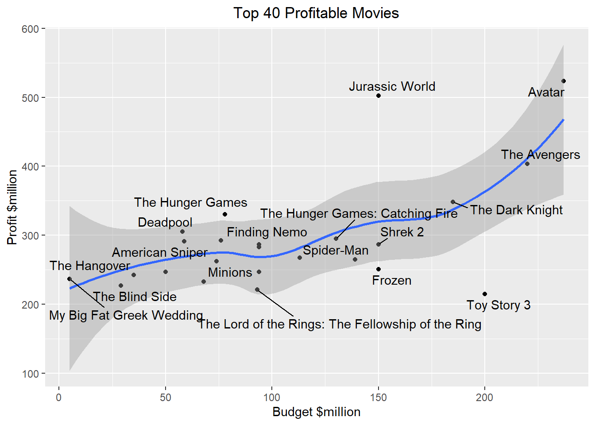
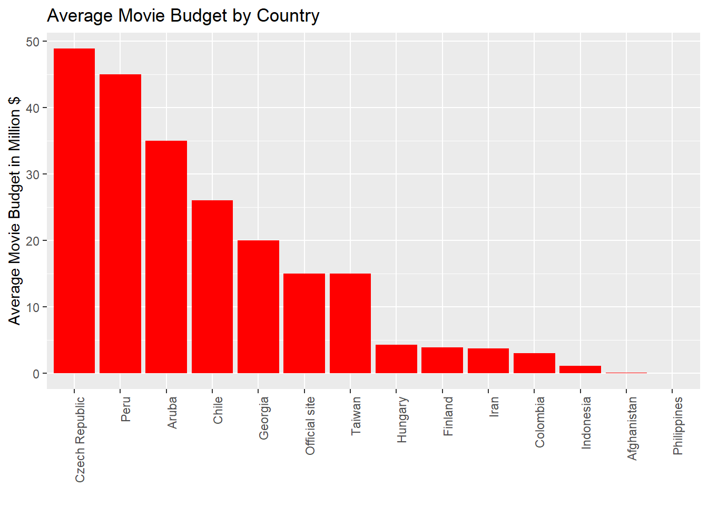
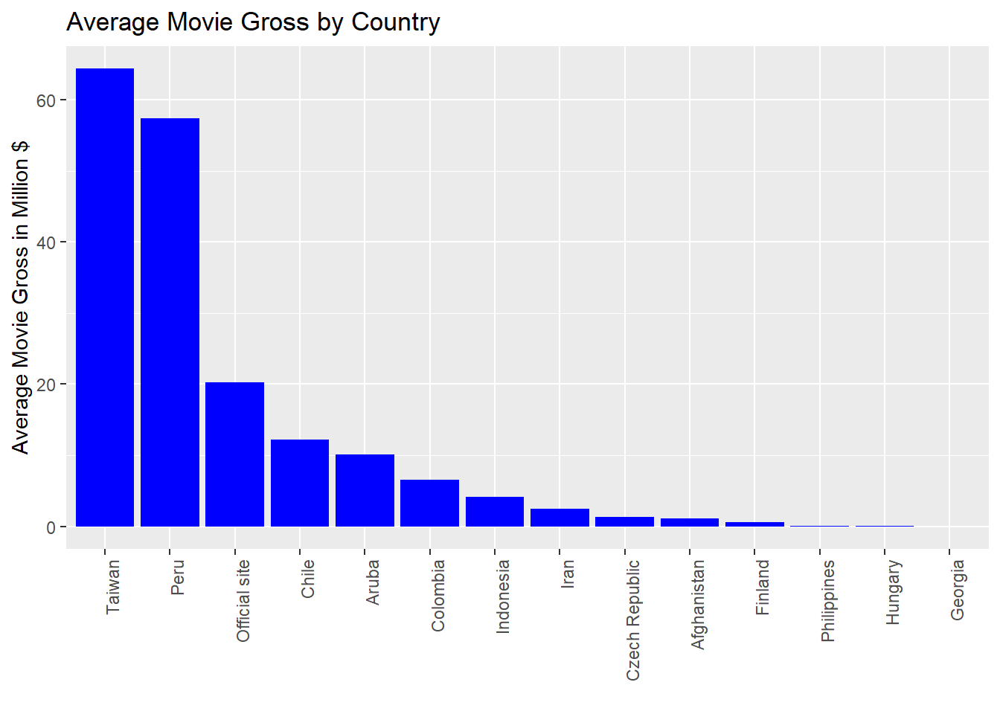
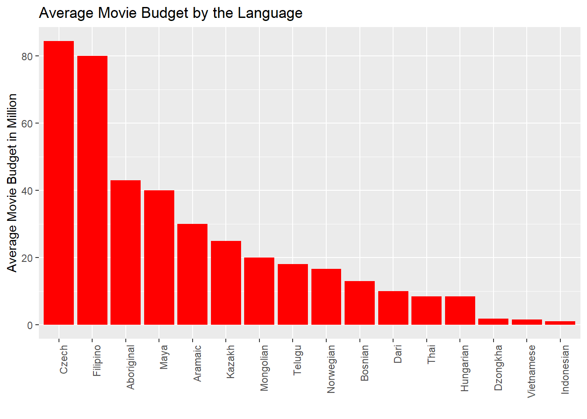
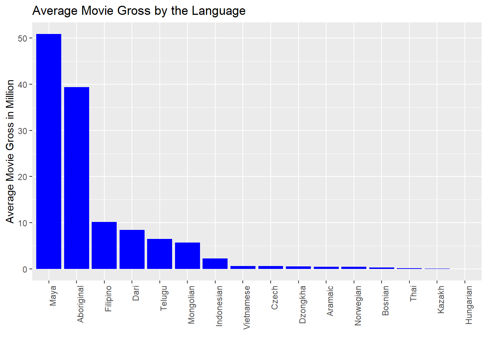
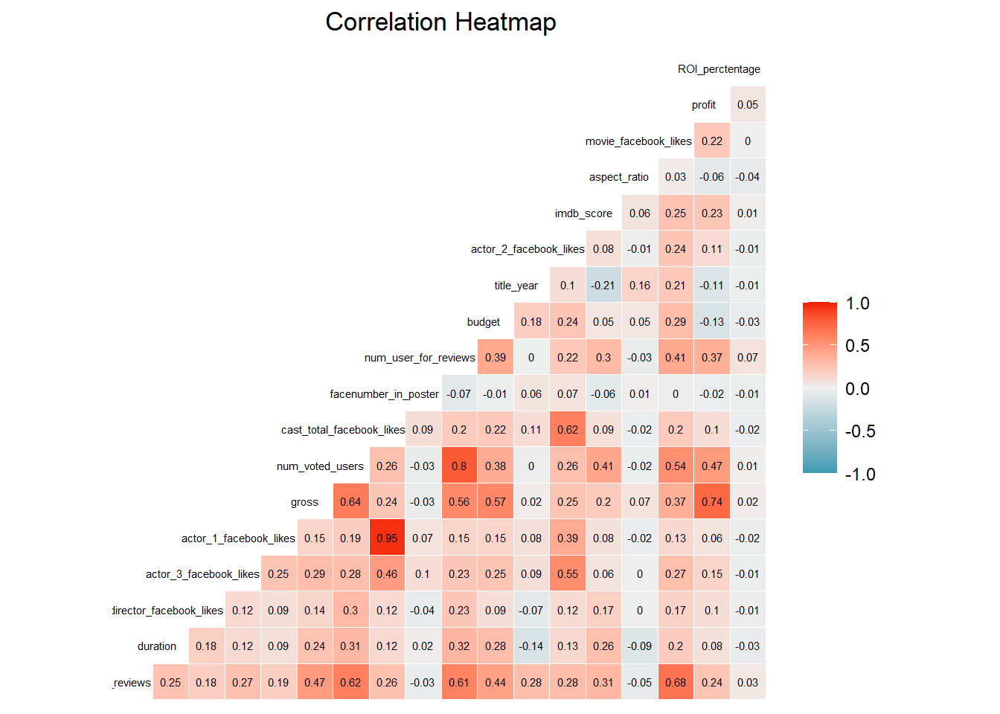

library(tibble)
library(DT)
library(knitr)
library(tm)
library(ggrepel)
library(ggplot2)
library(wordcloud)
library(dplyr)
library(fitdistrplus)
library(plotly)
library(tidyverse)
library(lubridate)
library(data.table)
library(formattable)
library(GGally)
knitr::opts_chunk$set(echo = TRUE, warning=FALSE, message=FALSE)Movie Exploratoy Analysis: Final Project
Introduction
The movie industry is one of the largest commercial institutions today. It has made a significant contribution to the global economy of the countries around the world. Hundreds of thousands of movies are being released worldwide every year in the hopes that it would be a box office hit and win the hearts of the public audience. With the massive amount of data on movies available today, I believe it would be really fascinating to examine and understand the factors that lead to the success of a movie. Such analysis would be crucial for the film production houses and sponsors to invest their time and money to the kind of movies that are positively acclaimed by the critics and the public. It would also be extremely beneficial to understand the historical trends and maximize the overall profit of the movie.
So the main objective of the paper will be to:
Explore the distribution of the movies wrt. some important feature.
Explore the movie’s IMDb score wrt. some important features.
Understand how the budget and the revenue of the movie vary wrt some important features.
Data
The 5000 IMDb Movie Dataset (https://www.kaggle.com/datasets/carolzhangdc/imdb-5000-movie-dataset) has been taken from Kaggle which contains information about 5000 movies that have been released between 1960-2016.The dataset holds interesting and valuable features like the movie’s genre, IMDb score, budget, revenue, actors/director names, facebook likes, critics/user reviews and many more which would crucial in visualizing and understanding how a movie’s success is a factor of these attributes. The detailed description of the data has been added after the process of data cleaning and preparation.
movie <- read_csv("_data/movie_metadata.csv", show_col_types = FALSE)
head(movie, 20)# A tibble: 20 × 28
color direct…¹ num_c…² durat…³ direc…⁴ actor…⁵ actor…⁶ actor…⁷ gross genres
<chr> <chr> <dbl> <dbl> <dbl> <dbl> <chr> <dbl> <dbl> <chr>
1 Color James C… 723 178 0 855 Joel D… 1000 7.61e8 Actio…
2 Color Gore Ve… 302 169 563 1000 Orland… 40000 3.09e8 Actio…
3 Color Sam Men… 602 148 0 161 Rory K… 11000 2.00e8 Actio…
4 Color Christo… 813 164 22000 23000 Christ… 27000 4.48e8 Actio…
5 <NA> Doug Wa… NA NA 131 NA Rob Wa… 131 NA Docum…
6 Color Andrew … 462 132 475 530 Samant… 640 7.31e7 Actio…
7 Color Sam Rai… 392 156 0 4000 James … 24000 3.37e8 Actio…
8 Color Nathan … 324 100 15 284 Donna … 799 2.01e8 Adven…
9 Color Joss Wh… 635 141 0 19000 Robert… 26000 4.59e8 Actio…
10 Color David Y… 375 153 282 10000 Daniel… 25000 3.02e8 Adven…
11 Color Zack Sn… 673 183 0 2000 Lauren… 15000 3.30e8 Actio…
12 Color Bryan S… 434 169 0 903 Marlon… 18000 2.00e8 Actio…
13 Color Marc Fo… 403 106 395 393 Mathie… 451 1.68e8 Actio…
14 Color Gore Ve… 313 151 563 1000 Orland… 40000 4.23e8 Actio…
15 Color Gore Ve… 450 150 563 1000 Ruth W… 40000 8.93e7 Actio…
16 Color Zack Sn… 733 143 0 748 Christ… 15000 2.91e8 Actio…
17 Color Andrew … 258 150 80 201 Pierfr… 22000 1.42e8 Actio…
18 Color Joss Wh… 703 173 0 19000 Robert… 26000 6.23e8 Actio…
19 Color Rob Mar… 448 136 252 1000 Sam Cl… 40000 2.41e8 Actio…
20 Color Barry S… 451 106 188 718 Michae… 10000 1.79e8 Actio…
# … with 18 more variables: actor_1_name <chr>, movie_title <chr>,
# num_voted_users <dbl>, cast_total_facebook_likes <dbl>, actor_3_name <chr>,
# facenumber_in_poster <dbl>, plot_keywords <chr>, movie_imdb_link <chr>,
# num_user_for_reviews <dbl>, language <chr>, country <chr>,
# content_rating <chr>, budget <dbl>, title_year <dbl>,
# actor_2_facebook_likes <dbl>, imdb_score <dbl>, aspect_ratio <dbl>,
# movie_facebook_likes <dbl>, and abbreviated variable names …Data Cleaning
The first process of cleaning the data includes removing any spurious characters (�) and white spaces from the different features like title and genre that could lead to an invalid analysis. Such character can occur in the raw data due to the internet scrapping process. The code given below will take care of the same.
movie$movie_title <- (sapply(movie$movie_title,gsub,pattern="\\�",replacement=""))
movie$genres <- (sapply(movie$genres,gsub,pattern="\\|",replacement=" "))After reading that data I realized that the dataset contains duplicate movies that should be removed. The code given below will take care of the same.
movie = movie[!duplicated(movie$movie_title),]I also notices that the currency in ‘Budget’ and ‘Gross’ of all the movies are not consistent with each other. For instance, Japan had all of it’s movies information in Yen which makes it difficult to compare it’s financial success with respect to a movie in USA. To make it easier to compare the movies with each other irrespective of their origin, I manually converted the currency into USD dollars.
movie <- transform(movie, budget = ifelse(country == "South Korea", budget/1173.49, budget))
movie <- transform(movie, budget = ifelse(country == "Japan", budget/115.33, budget))
movie <- transform(movie, budget = ifelse(country == "Turkey", budget/3.49, budget))
movie <- transform(movie, budget = ifelse(country == "Hungary", budget/298.17, budget))
movie <- transform(movie, budget = ifelse(country == "Thailand", budget/35.67, budget))
movie <- transform(movie, gross = ifelse(country == "South Korea", gross/1173.49, gross))
movie <- transform(movie, gross = ifelse(country == "Japan", gross/115.33, gross))
movie <- transform(movie, gross = ifelse(country == "Turkey", gross/3.49, gross))
movie <- transform(movie, gross = ifelse(country == "Hungary", gross/298.17, gross))
movie <- transform(movie, gross = ifelse(country == "Thailand", gross/35.67, gross))To make the analysis more comprehensible, I converted the budget and revenue into the factor of millions and Facebook likes of the director and actors into a factor of thousands.
#Convert budget and revenue in millions
movie$budget <- movie$budget/1000000
movie$gross <- movie$gross/1000000
movie$cast_total_facebook_likes <- movie$cast_total_facebook_likes/1000
movie$movie_facebook_likes <- movie$movie_facebook_likes/1000
movie$actor_1_facebook_likes <- movie$actor_1_facebook_likes/1000
movie$director_facebook_likes <- movie$director_facebook_likes/1000
movie$actor_2_facebook_likes <- movie$actor_2_facebook_likes/1000
movie$actor_3_facebook_likes <- movie$actor_3_facebook_likes/1000The Gross income earned by the movie along with the budget are 2 of the most important factors in deciding the financial success of the movie. So I mutated the data and found 2 new important features based on the budget and gross, ie. the profit earned by the movie and its rate of investment percentage.
movie <- movie %>%
mutate(profit = gross - budget,
ROI_perctentage = (profit/budget)*100)Final Updated Data Description
The final data description of the updated data has been shown below along with its datatype (character/numerical)
description.type <- lapply(movie,class)
description.desc <- c("Tells if the Movie was colored or black/white",
"DIrector's Name",
"Number of critics who reviewed",
"Runtime of the movie in minutes",
"Number of director's facebook page likes",
"Number of 3rd actor's facebook page likes",
"Name of second actor",
"Number of 1st actor's facebook page likes",
"Movie's Gross Earning in million in $",
"Movie's Genre",
"First actor's Name",
"Movie's Title",
"Number of IMDb User's votes",
"Cast member's total facebook likes",
"Name of the third actor",
"Number of the actor who featured in the movie poster",
"Movie plot describing Keywords",
"IMDb's link",
"Number of User's reviews",
"Movie's Language",
"Country",
"Content rating ",
"Budget in millions in $",
"Release Year",
"Actor 2 facebook likes",
"IMDB score",
"Aspect ratio of the movie",
"Number of facebook likes",
"Genre",
"Keywords",
"Profit in millions in $",
"Return Of Investment in Percentage")
description.name1 <- colnames(movie)
data.desc <- as_data_frame(cbind(description.name1,description.type,description.desc))
colnames(data.desc) <- c("Factors","DataType","Factor Description")
library(knitr)
kable(data.desc)| Factors | DataType | Factor Description |
|---|---|---|
| color | character | Tells if the Movie was colored or black/white |
| director_name | character | DIrector’s Name |
| num_critic_for_reviews | numeric | Number of critics who reviewed |
| duration | numeric | Runtime of the movie in minutes |
| director_facebook_likes | numeric | Number of director’s facebook page likes |
| actor_3_facebook_likes | numeric | Number of 3rd actor’s facebook page likes |
| actor_2_name | character | Name of second actor |
| actor_1_facebook_likes | numeric | Number of 1st actor’s facebook page likes |
| gross | numeric | Movie’s Gross Earning in million in $ |
| genres | character | Movie’s Genre |
| actor_1_name | character | First actor’s Name |
| movie_title | character | Movie’s Title |
| num_voted_users | numeric | Number of IMDb User’s votes |
| cast_total_facebook_likes | numeric | Cast member’s total facebook likes |
| actor_3_name | character | Name of the third actor |
| facenumber_in_poster | numeric | Number of the actor who featured in the movie poster |
| plot_keywords | character | Movie plot describing Keywords |
| movie_imdb_link | character | IMDb’s link |
| num_user_for_reviews | numeric | Number of User’s reviews |
| language | character | Movie’s Language |
| country | character | Country |
| content_rating | character | Content rating |
| budget | numeric | Budget in millions in $ |
| title_year | numeric | Release Year |
| actor_2_facebook_likes | numeric | Actor 2 facebook likes |
| imdb_score | numeric | IMDB score |
| aspect_ratio | numeric | Aspect ratio of the movie |
| movie_facebook_likes | numeric | Number of facebook likes |
| profit | numeric | Genre |
| ROI_perctentage | numeric | Keywords |
| color | character | Profit in millions in $ |
| director_name | character | Return Of Investment in Percentage |
Exploratory Data Analysis
In this section, I used various packages and graphical methods to explore the 5000 IMDB movie data set.
Distribution of Some Important Variables
This section explores the frequency of the movies with respect to many important features. The profits of the movie, its imdb score as well as its run time give close to a normal distribution. We can see that both the budget and gross income earned are right skewed; majority of the movies have their budget and revenue ranging from $0 million to $20 million. On the other hand the profit, which is normally distributed around $0, portrays that almost an equal number of movies have seen financial success and failure. The graph that explores the distribution of the movie release year shows there has been a significant increase in the movies produced every year and we can see a considerable upward trend since 1990.
par(mfrow=c(2,3))
hist(movie$gross,col = 'red',breaks=500,main='Movie gross',xlab = 'Gross (in million $)',xlim = c(0,100))
hist(movie$budget,col = 'blue',breaks=500,main='Movie budget',xlab = 'budget (in million $)',xlim = c(0,100))
hist(movie$profit,col = 'red',breaks=200,main='Profits of the Movie',xlab = 'Profit (in million $)', xlim = c(-200,200))
hist(movie$title_year,col = 'blue',breaks=70,main='Movie Release Year',xlab = 'Movie Release Year',xlim = c(1960,2016))
hist(movie$imdb_score,col = 'red',breaks=70,main='Movie IMDb Score ',xlab = 'IMDb Score',xlim = c(0,10))
hist(movie$duration,col = 'blue',breaks=100,main='Movie Runtime',xlab = 'Movie Runtime',xlim = c(0,200))
Movie Genre Analysis
The genre of the movie is an important attribute that helps distinguish them into different categories and analyse which of them do the best in terms of financial success and user/critics reviews. In this dataset, each movie has more than one genre, so the separation of each genre in this column was required to explore all of them separately. The ‘TM’ package was used for this purpose. I converted the genre variable to corpus and further analysed them. A word cloud is a graphical representation for the word frequency that gives highest importance to the words/titles that appear more frequently in a text. This is a great way to understand which are the top movie genre, at a cursory glance. We can see that Drama, Comedy and Thriller are the top movie genres in the word cloud.
genre <- Corpus(VectorSource(movie$genres))
genre_dtm <- DocumentTermMatrix(genre)
genre_freq <- colSums(as.matrix(genre_dtm))
freq <- sort(colSums(as.matrix(genre_dtm)), decreasing=TRUE)
genre_wf <- data.frame(word=names(genre_freq), freq=genre_freq)
pal2 <- brewer.pal(10,"Dark2")
wordcloud(genre_wf$word,genre_wf$freq,random.order=FALSE,
rot.per=.15, colors=pal2,scale=c(5,.9))
Movie IMDB’s Analysis on Various Factors
Relationship of Genre with the IMDB Score
The next graph explores how the IMDB Score varies for all the genres. For this I have created a new dataframe that contains all the genres as different columns along with its final imdb score. As we go through each movie’s genre, we keep adding 1 to the respective genre column that is present in the main movie_dataset attribute. Once that is done I calculated the mean of all the imdb scores of each genre. We can see that almost all the genre’s movies have similar Imdb rating and there is no significant trend that shows that one kind of genre does better than the other which is a very interesting to see.
genres.df <- as.data.frame(movie[,c("genres", "imdb_score")])
genres.df$Action <- sapply(1:length(genres.df$genres), function(x) if (genres.df[x,1] %like% "Action") 1 else 0)
genres.df$Adventure <- sapply(1:length(genres.df$genres), function(x) if (genres.df[x,1] %like% "Adventure") 1 else 0)
genres.df$Animation <- sapply(1:length(genres.df$genres), function(x) if (genres.df[x,1] %like% "Animation") 1 else 0)
genres.df$Biography <- sapply(1:length(genres.df$genres), function(x) if (genres.df[x,1] %like% "Biography") 1 else 0)
genres.df$Comedy <- sapply(1:length(genres.df$genres), function(x) if (genres.df[x,1] %like% "Comedy") 1 else 0)
genres.df$Crime <- sapply(1:length(genres.df$genres), function(x) if (genres.df[x,1] %like% "Crime") 1 else 0)
genres.df$Documentary <- sapply(1:length(genres.df$genres), function(x) if (genres.df[x,1] %like% "Documentary") 1 else 0)
genres.df$Drama <- sapply(1:length(genres.df$genres), function(x) if (genres.df[x,1] %like% "Drama") 1 else 0)
genres.df$Family <- sapply(1:length(genres.df$genres), function(x) if (genres.df[x,1] %like% "Family") 1 else 0)
genres.df$Fantasy <- sapply(1:length(genres.df$genres), function(x) if (genres.df[x,1] %like% "Fantasy") 1 else 0)
genres.df$`Film-Noir` <- sapply(1:length(genres.df$genres), function(x) if (genres.df[x,1] %like% "Film-Noir") 1 else 0)
genres.df$History <- sapply(1:length(genres.df$genres), function(x) if (genres.df[x,1] %like% "History") 1 else 0)
genres.df$Horror <- sapply(1:length(genres.df$genres), function(x) if (genres.df[x,1] %like% "Horror") 1 else 0)
genres.df$Musical <- sapply(1:length(genres.df$genres), function(x) if (genres.df[x,1] %like% "Musical") 1 else 0)
genres.df$Mystery <- sapply(1:length(genres.df$genres), function(x) if (genres.df[x,1] %like% "Mystery") 1 else 0)
genres.df$News <- sapply(1:length(genres.df$genres), function(x) if (genres.df[x,1] %like% "News") 1 else 0)
genres.df$Romance <- sapply(1:length(genres.df$genres), function(x) if (genres.df[x,1] %like% "Romance") 1 else 0)
genres.df$`Sci-Fi` <- sapply(1:length(genres.df$genres), function(x) if (genres.df[x,1] %like% "Sci-Fi") 1 else 0)
genres.df$Short <- sapply(1:length(genres.df$genres), function(x) if (genres.df[x,1] %like% "Short") 1 else 0)
genres.df$Sport <- sapply(1:length(genres.df$genres), function(x) if (genres.df[x,1] %like% "Sport") 1 else 0)
genres.df$Thriller <- sapply(1:length(genres.df$genres), function(x) if (genres.df[x,1] %like% "Thriller") 1 else 0)
genres.df$War <- sapply(1:length(genres.df$genres), function(x) if (genres.df[x,1] %like% "War") 1 else 0)
genres.df$Western <- sapply(1:length(genres.df$genres), function(x) if (genres.df[x,1] %like% "Western") 1 else 0)
means <- rep(0,23)
for (i in 1:23) {
means[i] <- mean(genres.df$imdb_score[genres.df[i+2]==1])
}
barplot(means, main = "Average imdb scores for different genres")
Actor’s with the Highest Average IMDB Score
The table format shows the top 20 actors which give the highest IMDB rating. Actors are what give life to the characters and drive a movie to its success or failure. Hence, this is an important factor that allows the production house to hire the actors who do generally well and give a highly acclaimed movie. This table shows that Krystyna Janda’s movies average IMDB rating is 9.10. This of course in not a complete analysis because we should also consider the number of movies done by each actor, but it still shows an approximate trend
movie %>%
group_by(actor_1_name) %>%
summarise(avg_imdb = mean(imdb_score)) %>%
arrange(desc(avg_imdb)) %>%
top_n(20, avg_imdb) %>%
formattable(list(avg_imdb = color_bar("orange")), align = 'l')| actor_1_name | avg_imdb |
|---|---|
| Krystyna Janda | 9.10 |
| Jack Warden | 8.90 |
| Rob McElhenney | 8.80 |
| Abigail Evans | 8.70 |
| Elina Abai Kyzy | 8.70 |
| Jackie Gleason | 8.70 |
| Kimberley Crossman | 8.70 |
| Maria Pia Calzone | 8.70 |
| Takashi Shimura | 8.70 |
| Bunta Sugawara | 8.60 |
| Claudia Cardinale | 8.60 |
| David Raizor | 8.60 |
| Donna Reed | 8.60 |
| Paulette Goddard | 8.60 |
| Ruth Wilson | 8.60 |
| Scatman Crothers | 8.55 |
| Bahare Seddiqi | 8.50 |
| Collin Alfredo St. Dic | 8.50 |
| Debi Mazar | 8.50 |
| Emilia Fox | 8.50 |
| Nimrat Kaur | 8.50 |
| Tobias Menzies | 8.50 |
Director’s with the Highest Average IMDB Score
Similar to the above table, this one shows the top 20 director which gives the highest IMDB ratings. This table shows that John Blanchard’s movies have the highest average rating of 9.5.
movie %>%
group_by(director_name) %>%
summarise(avg_imdb = mean(imdb_score)) %>%
arrange(desc(avg_imdb)) %>%
top_n(20, avg_imdb) %>%
formattable(list(avg_imdb = color_bar("orange")), align = 'l')| director_name | avg_imdb |
|---|---|
| John Blanchard | 9.500 |
| Cary Bell | 8.700 |
| Mitchell Altieri | 8.700 |
| Sadyk Sher-Niyaz | 8.700 |
| Charles Chaplin | 8.600 |
| Mike Mayhall | 8.600 |
| Damien Chazelle | 8.500 |
| Majid Majidi | 8.500 |
| Raja Menon | 8.500 |
| Ron Fricke | 8.500 |
| Sergio Leone | 8.475 |
| Christopher Nolan | 8.425 |
| Asghar Farhadi | 8.400 |
| Bill Melendez | 8.400 |
| Catherine Owens | 8.400 |
| Jay Oliva | 8.400 |
| Marius A. Markevicius | 8.400 |
| Moustapha Akkad | 8.400 |
| Rakeysh Omprakash Mehra | 8.400 |
| Richard Marquand | 8.400 |
| Robert Mulligan | 8.400 |
| S.S. Rajamouli | 8.400 |
Top 40 movies based on their profits
This particular graph shows profit earned by the top 40 movies that. We can see with this plot that the trend is almost linear showing that usually the movies with high budget tend to be financially more successful and earn more profit.
movie %>%
arrange(desc(profit)) %>%
top_n(40, profit) %>%
filter(title_year %in% c(2000:2016)) %>%
ggplot(aes(x=budget, y=profit)) +
geom_point() +
geom_smooth() +
geom_text_repel(aes(label=movie_title)) +
labs(x = "Budget $million", y = "Profit $million", title = "Top 40 Profitable Movies") +
theme(plot.title = element_text(hjust = 0.5))
Average Movie Budget by Countries
This part of the analysis explores how the budget of the movies vary with each country. Surprisingly, India spends the most amount of money on their movies. It is also interesting to see that the trend is not very linear, i.e. the top countries have a significantly higher movie budget than the countries that have lower average budget of the movies.
country_movie <- movie %>%
subset(country != "") %>%
subset(country != "New Line") %>%
group_by(country) %>%
summarise(count=n(),
avg_budget = mean(budget,na.rm="true"),
avg_gross = mean(gross,na.rm="true"))
country_with_multiple_movies <- subset(country_movie,count>1)[1]
ggplot(country_movie[complete.cases(country_movie), ],
aes(x=reorder(country,-avg_budget),avg_budget))+
geom_bar(stat = "identity",fill = 'red')+
theme(axis.text.x=element_text(angle=90, hjust=1))+
ylab("Average Movie Budget in Million $")+
xlab("")+
ggtitle("Average Movie Budget by Country")
Average Movie Gross by Country
This part of the analysis explores how the revenue earned by the movies vary with each country in millions. We can see that the top 5 countries have a considerably higher revenue(more than $50 Million ) than the rest of the countries.
ggplot(country_movie[complete.cases(country_movie), ],
aes(x=reorder(country,-avg_gross),avg_gross))+
geom_bar(stat = "identity",fill = 'blue')+
theme(axis.text.x=element_text(angle=90, hjust=1))+
ylab("Average Movie Gross in Million $")+
xlab("")+
ggtitle("Average Movie Gross by Country")
Averge Movie Budget by Language
Similar to the above 2 plots, these 2 graph explores how the budget spent and the revenue earned by the movies vary with the language of the movie produced.
language_movie <- movie %>%
group_by(language) %>%
summarise(count=n(),
avg_budget = mean(budget,na.rm="true"),
avg_gross = mean(gross,na.rm="true"))
director_with_multiple_movies <- subset(language_movie,count>1)[1]
ggplot(language_movie[complete.cases(language_movie), ],
aes(x=reorder(language,-avg_budget),avg_budget))+
geom_bar(stat = "identity",fill = 'red')+
theme(axis.text.x=element_text(angle=90, hjust=1))+
ylab("Average Movie Budget in Million")+
xlab("")+
ggtitle("Average Movie Budget by the Language")
Average Movie Gross by Language
ggplot(language_movie[complete.cases(language_movie), ],
aes(x=reorder(language,-avg_gross),avg_gross))+
geom_bar(stat = "identity",fill = 'blue')+
theme(axis.text.x=element_text(angle=90, hjust=1))+
ylab("Average Movie Gross in Million")+
xlab("")+
ggtitle("Average Movie Gross by the Language")
Final Correlation Map
The last plot is a heatmap that shows how various attributes of a movie are correlated to each other. We can see that there is a very high correlation between the gross income and the profit earned by the movies with a factor of 0.74. There is also a high correlation between reviews and movie FB likes.
ggcorr(movie, label = TRUE, label_round = 2, label_size = 2, size =2 , hjust = .85) +
ggtitle("Correlation Heatmap") +
theme(plot.title = element_text(hjust = 0.5))
Conclusion
This paper has helped us explore and understand the movie dataset and answer some of the interesting questions. Some of the important inferences that I could from the above analysis are as follow:
- We can see that Drama, comedy and thriller are one of top genres movies produced.
- The number of movies being produced every year have increased significantly.
- The IMDb score as well as the profit of the movies are normally distributed while the Budget and the Revenue are very rightly skewed.
- There is no significant trend that shows that one kind of genre does better than the other.
- We calculated the average highest Imdb score for different actors and directors which would be beneficial for the production houses to hire them accordingly.
- We also saw that on the basis of the top 40 movies that did the best financially, there is an almost linear correlation between the budget of the movie and the profit earned by it.
- India has a significantly higher movie budget (around 100 million USD) than the other movies.New Zealand on the other hands tops the average movie gross (around 10 million USD).
- Similarly we could see that Czech Language movies that have highest movie budget (around 85 million USD), and Mayan language has the highest movie revenue(around 50 million USD).